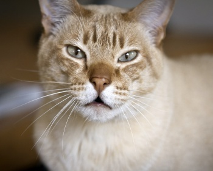

|  | Австралийская дымчатая порода идеально сочетает в себе все характерные внешние черты домашних кошек с естественным окрасом, и лучшие внутренние качества этих животных. Их прекрасное здоровье, охотничьи инстинкты и ласковое отношение к людям делают австралийских прекрасным выбором и для одиноких хозяев, и для семей с детьми.Эти кошки имеют средние размеры, худощавое, мускулистое телосложение и уши средних размеров. Конечности стройные, несколько удлиненные, мордочка клиновидной формы. Австралийский мист живет в среднем 15 лет, но может и дольше радовать хозяев благодаря крепкому здоровью и хорошему уходу. |